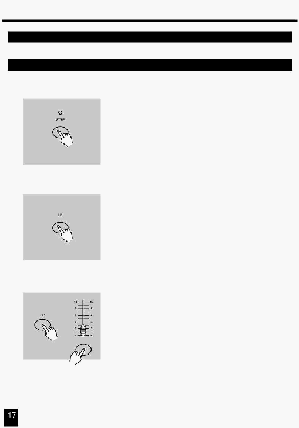

2. Опис інструкцій
2.2 Редагування
2.2.7 Модифікація Кроку або Кроків
1.
Увійдіть у режим Редагування.
2. Натисніть кнопку Step й утримуйте до досягнення Кроку, що
Ви бажаєте модифікувати.
3.
Натисніть й утримуйте кнопку Up для збільшення яскравості
до необхідного рівня.
Якщо Ви бажаєте зменшити яскравість, натисніть й утримуйте
кнопку Down для зменшення яскравості до необхідного рівня.
4. Натисніть кнопку Flash відповідного
каналу інтерфейсу DMX
сцени, що Ви бажаєте змінити, утримуючи натиснутою кнопку
Up або Down до досягнення бажаного рівня яскравості, якому
можна прочитати на цифровому дисплеї. Після цього Ви можете
натиснути кнопки Flash, поки Ви не будете задоволені новою
сценою..
5.
Повторите пункти 2, 3 й 4 доти, поки не будуть модифіковані всі
кроки.
6.
Вийдіть із режиму Редагування.